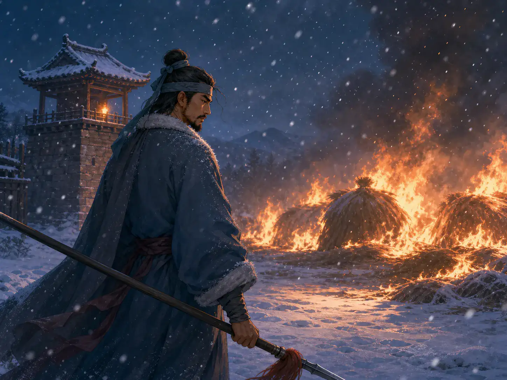
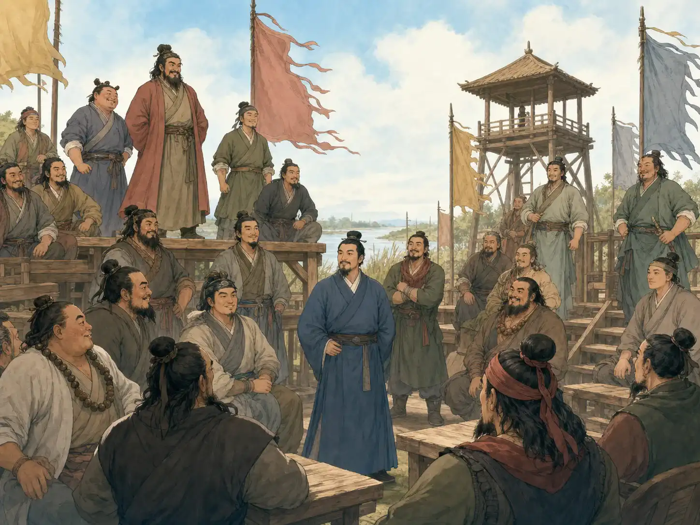
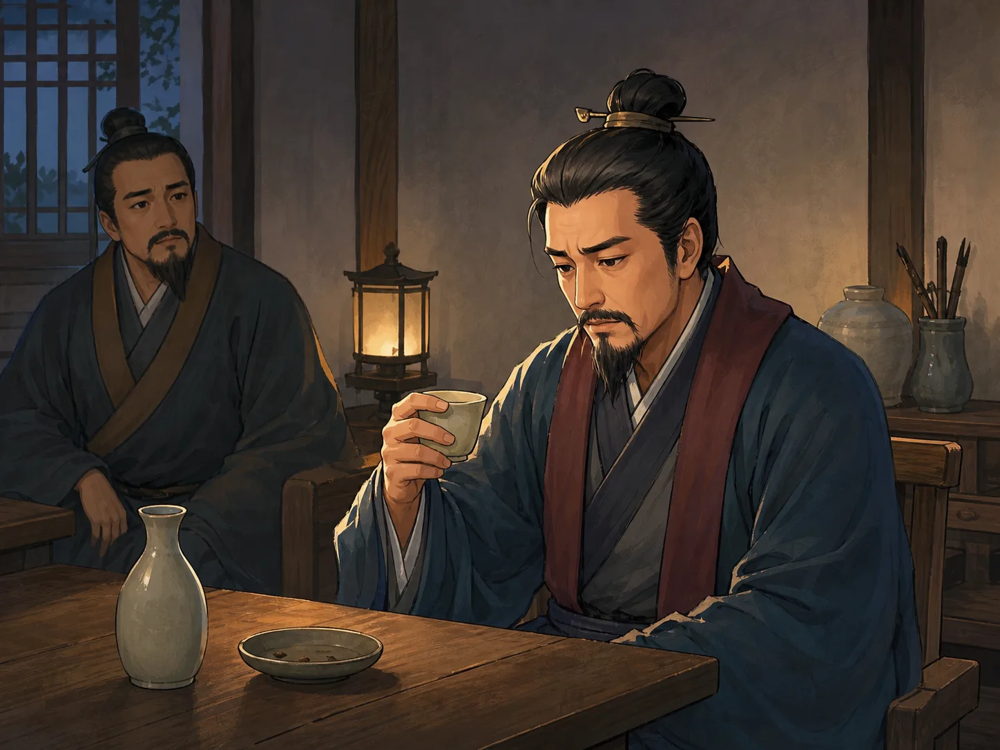

《水浒传》：一百零八位好汉的故事
Water Margin: The Story of 108 Heroes
Page 1
这本书最重的地方，不是打得多热闹，而是人被逼得没路走
The Heaviest Part Is Not the Fighting. It Is People Running Out of Road.
《水浒传》和《西游记》很不一样。它虽然也有“一百零八个魔星转世”这样的神奇开头，可孩子们后来真正记住的，往往不是那些神怪。
大家记住的，是一群本来想好好过日子的人，怎么一步一步被逼到没有别的路，只能往梁山走。
所以《水浒传》外面看起来像是好汉聚义、打虎、闯关、征战，可里面真正一直在问的问题，其实是：如果一个人退啊退啊，退到背后已经没有地了，他还能怎么办？
Water Margin feels very different from Journey to the West. It does begin with a magical idea about 108 star spirits becoming human. But what children usually remember later is not the supernatural opening.
What they remember is a group of people who once wanted ordinary lives, and who are pushed step by step until there is no road left except the road to Liangshan.
So on the outside, Water Margin may look like a book of heroes, tiger fights, outlaw camps, and battles. But inside, it keeps asking a deeper question: if a person keeps stepping backward until there is no ground left behind, what can that person still do?
Page 2
林冲最让人难过，因为他最开始真的只想安稳过日子
A major Water Margin hero who is pushed into outlaw life after repeated traps and injustice. Is One of the Saddest, Because He Truly Wanted an Ordinary Life

On a snowy night, Lin Chong stands outside the burning hay field. He knows his old life is gone.
《水浒传》里最能说明“逼上梁山”的人之一，就是林冲。
他本来有本事，也有家，有自己想守住的生活。可有人看上了他的妻子，又一层一层给他设圈套。到最后，他被陷害、被流放、被追杀，连最后一点安稳都被烧掉了。
书里最冷的一幕之一，就是大雪夜里，草料场起火。林冲听见外面的人说，等火灭了，就回去捡他的骨头交差。那一刻他终于明白，别人不是要赶走他，而是要他彻底消失。
所以他后来上梁山，不是因为他一开始就想当好汉，而是因为那个他原来想回去的家，已经没有了。
One of the clearest examples of being "forced up Liangshan" is A major Water Margin hero who is pushed into outlaw life after repeated traps and injustice..
At first he has skill, a home, and a life he wants to protect. But powerful people want what belongs to him, and trap after trap closes around him. In the end he is framed, exiled, hunted, and stripped of the last calm place he still had.
One of the coldest scenes in the book comes on a snowy night when the hay field catches fire. Lin Chong hears men outside saying that after the fire burns down, they can simply gather up his bones and report the job finished. In that moment he understands something terrible. They are not trying to drive him away. They are trying to erase him completely.
That is why he later goes to Liangshan. He does not go because he always wanted to become an outlaw hero. He goes because the home he wanted to return to is gone.
Page 3
梁山热闹，是因为很多没路的人终于站到了一起
Liangshan Feels Powerful Because Many People with No Road Left Finally Stand Together

Liangshan is not where everyone first wants to go. But there, many people stop being alone for the first time.
后来，越来越多的人来到梁山。有人是像林冲这样被逼到绝路，有人是替家人报仇以后再也回不去原来的日子，也有人是心里一直还想做忠臣，却发现朝廷根本不给他活路。
梁山为什么会让那么多人记住？不是因为那里的人都完美，也不是因为他们真的就比别人更高尚。
而是因为在那个地方，很多已经被世道挤到角落里的人，第一次站到了一起。你会感觉到一种很强的气氛：这些人也许各有毛病，可他们终于不用一个人硬扛了。
Later, more and more people arrive at Liangshan. Some are driven there the way Lin Chong is driven there. Some can no longer return after taking revenge for family. Some still think of themselves as loyal servants of the state, yet discover that the state itself will not let them live.
Why does Liangshan stay in so many readers' minds? Not because everyone there is perfect. Not because they are all purely nobler than other people.
It stays because, in that place, many people who have already been squeezed into the corner by the world finally stand together. You feel a strong change in the air. These people may all have flaws, but for the first time, they no longer have to carry everything alone.
Page 4
可这本书最凉的地方，是热闹最后慢慢散掉了
But the Coldest Part Comes When the Noise Slowly Fades

In the end, many do not fall in the loudest battles. Some are destroyed by something as quiet as one cup of wine.
《水浒传》读到后面，会越来越不只是“好汉真厉害”。因为梁山最后并没有一直那样热闹地赢下去。
宋江接受招安以后，梁山好汉替朝廷去打仗。一个又一个人死去，活着回来的人越来越少。原来很吵、很满的一百零八个名字，慢慢变得空了起来。
这也是为什么《水浒传》读完以后，心里常常不是痛快，而是发凉。那些好汉终于站在一起了，可最后很多人还是没有得到真正安稳的结局。
所以这本书真正厉害的地方，不只是“聚义”，也是它敢把“散”的那一面写出来。
As you move deeper into Water Margin, the book becomes less and less a simple story of "heroes are amazing." Liangshan does not keep winning loudly forever.
After A central Water Margin figure who wants to stay loyal yet is drawn into leading Liangshan. accepts the court's pardon, the heroes fight on the government's side. One by one, more of them die. Fewer and fewer return alive. The list of 108 names, once loud and crowded, slowly begins to empty out.
That is one reason the ending often leaves readers cold rather than triumphant. The heroes finally stood together, yet many of them still do not reach a truly peaceful ending.
So one of the book's deepest strengths is not only that it writes about gathering. It also dares to write about scattering apart.
小结
In Summary
《水浒传》看起来像是好汉的故事，里面其实一直装着“为什么有人会被逼到没有路”的问题。
林冲、武松、宋江这些人后来都成了很响的名字，可他们一开始并不是站在山顶上发光的英雄。他们先是普通人，然后才被推成了故事里的好汉。
Water Margin may look like a book of famous heroes, but inside it keeps asking why some people are pushed until there is no road left for them.
Names like Lin Chong, Wu Song, and Song Jiang later become very famous. But they do not begin as shining heroes on a mountaintop. They begin as ordinary people, and only later are pushed into legend.